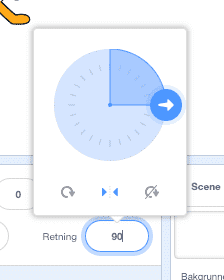

Introduksjon
Vi skal lage et spill hvor katten Felix skal fange musa Herbert. Du styrer Herbert med musepekeren og skal prøve å unngå å bli tatt av Felix. Jo lenger du unngår ham jo flere poeng får du, men blir du tatt, går poengsummen din ned.

Steg 1: Felix følger musepekeren
Vi ønsker at katten Felix skal følge etter musepekeren.
Sjekkliste
Start et nytt prosjekt.
Trykk på
ii hjørnet av og bytt navn på figuren til
og bytt navn på figuren til Felix.Sørg for at Felix kun ser til høyre og venstre ved å sette rotasjonsmåte til .
Klikk på scenen ved siden av Felix i vinduet for figurer. Velg fanen
Bakgrunnerog trykk på for å importere en ferdig bakgrunn. Velg den bakgrunnen du vil.
for å importere en ferdig bakgrunn. Velg den bakgrunnen du vil.Klikk på Felix, velg
Skript-fanen og lag dette skriptet:Når grønt flagg klikkes for alltid pek mot [musepeker v] gå (10) steg neste drakt trommeslag (3 v) som varer (0.25) takter slutt
Test prosjektet
Klikk på det grønne flagget.
Følger Felix musepekeren?
Ser det ut som han går når han beveger seg?
Beveger han seg med riktig hastighet?
Klikk det røde stopp-symbolet for at Felix skal slutte å følge etter musepekeren.
Lagre prosjektet
Scratch lagrer alle prosjektene dine automatisk med jevne mellomrom. Det kan likevel være lurt å lagre manuelt innimellom.
- I filmenyen, velg
Lagre nå.
Steg 2: Felix jager Herbert
Nå ønsker vi at Felix skal jage musa Herbert i stedet for musepekeren.
Sjekkliste
Lag en ny figur ved å trykke på
 og velg figuren
og velg figuren Dyr/Mouse1.Bytt navn på figuren til
Herbert.Gjør Herbert mindre enn Felix ved å trykke på
 (øverst mot midten av vinduet). Prøv seks klikk.
(øverst mot midten av vinduet). Prøv seks klikk.Gi Herbert dette skriptet:
Når grønt flagg klikkes for alltid gå til [musepeker v] pek mot [Felix v] slutt
Test prosjektet
Klikk på det grønne flagget.
Flytter Herbert seg med musepekeren?
Jager Felix Herbert?
Steg 3: Felix sier når han har fanget Herbert
Vi vil at Felix skal vite når han har fanget Herbert og fortelle det til oss.
Sjekkliste
Endre skriptet til Felix til dette:
Når grønt flagg klikkes for alltid pek mot [musepeker v] gå (10) steg neste drakt trommeslag (3 v) som varer (0.25) takter hvis (berører [Herbert v]?) si [Tok deg!] i (1) sekunder slutt slutt
Test prosjektet
Klikk på det grønne flagget.
- Sier Felix fra når han har fanget Herbert?
Steg 4: Herbert blir et spøkelse når han fanges
I tillegg til at Felix sier noe, vil vi nå at Herbert blir forvandlet til et spøkelse når han fanges.
Sjekkliste
Endre skriptet til Felix slik at det sender en melding og lager en lyd når han fanger Herbert:
Når grønt flagg klikkes for alltid pek mot [musepeker v] gå (10) steg neste drakt trommeslag (3 v) som varer (0.25) takter hvis (berører [Herbert v]?) send melding [Fanget!] trommeslag (1 v) som varer (0.25) takter si [Tok deg!] i (1) sekunder vent (1) sekunder slutt sluttVelg Herbert og gå til
Drakter-fanen.Hent en ny drakt ved å trykke på
og velg Fantasi/ghost2-aGjør drakten mindre ved å velge
og trykke seks ganger på spøkelsesdrakten.Endre navnene på Herberts drakter slik at musedrakten heter
levendeog spøkelsesdrakten heterdød.Gå til
Skript-fanen, og lag et nytt skript for Herbert for å gjøre ham om til et spøkelse. Ikke slett det gamle skriptet:når jeg mottar [Fanget! v] bytt drakt til [død v] vent (0.5) sekunder bytt drakt til [levende v]
Test prosjektet
Klikk på det grønne flagget.
Forvandles Herbert til et spøkelse når han fanges?
Spiller Felix de riktige lydene til riktig tid?
Står Felix stille lenge nok til at Herbert kommer seg unna?
Steg 5: Telle poeng
La oss legge til en poengsum slik at vi kan se hvor flink man er til å holde Herbert i live. Vi begynner med poengsummen null og øker den med en for hvert sekund. Hvis Felix fanger Herbert, minker vi poengsummen med ti.
Sjekkliste
På
Skript-fanen under kategorienData, lag en ny variabel. Kall variabelen forPoeng, og la den gjelde for alle figurer.
Legg merke til at
Poeng0dukket opp øverst til venstre i spillet ditt.Klikk på
Scenetil venstre på skjermen, ved siden avFigurer. Lag disse to skriptene på scenen:Når grønt flagg klikkes sett [Poeng v] til (0) for alltid vent (1) sekunder endre [Poeng v] med (1) når jeg mottar [Fanget! v] endre [Poeng v] med (-10)
Test prosjektet
Klikk på det grønne flagget.
Øker poengsummen med en hvert sekund?
Går poengsummen ned med ti når Herbert blir fanget?
Hva skjer om Herbert fanges før du har ti poeng?
Går poengsummen tilbake til null når du starter spillet på nytt?
Lagre prosjektet
Du er ferdig. Godt gjort. Nå kan du spille spillet!
Du kan dele spillet med familie og venner ved å trykke Legg ut på menylinjen.